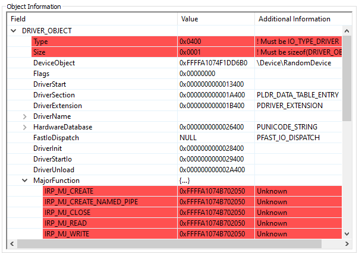

Drivers commanly use IOCTLs for communication from user and kernel mode, but what really goes on behind the scene. DeviceIoControl is the API responsible for sending an IRP_MJ_DEVICE_CONTROL request (along with an IOCTL and buffers of data) to a driver.
The driver specifies the address of the funciton that then handles these requests. This is done through the array DRIVER_OBJECT.MajorFunction[]. Continuing to trace back, the DRIVER_OBJECT comes from the DriverEntry which is the entry point on a WDM driver. It's clear that the DRIVER_OBJECT needed for IOCTL communication comes from the kerenl, but where?
Following at NtLoadDriver eventually leads to IopLoadDriver which calls ObCreateObject with IoDriverObjectType as the OBJECT_TYPE. It's worth noting that driver objects can be viewed in the NT object manager under the "Driver" subdirectory with tools such as WinObjEx
ObCreateObject with IoDriverObjectType allows us to create our own driver object. To ensure the object survives and is not deleted you need to reference the object. For example you can use ObReferenceObjectByPointer or in the object attributes pass OBJ_PERMANENT which will start the reference count at 1.
It is then necessary to call ObInsertObject in order to add the object to the system. ObInsertObject returns a handle, which can be closed as it does not affect whether the object will be deleted or not. Next, there are several members of the driver that we need to modify, the first being the MajorFunction member which points to the function(s) that will handle IOCTLs. Secondly, the Flags member needs to be specifically set with the type of IO transfers that the driver object will use. Finally, FastIoDispatch must be set to NULL (or could be a valid handler) so the kernel won't try and direct functions to it. All other members are optional.
An example of a newly created driver object:

With the ability to create a fake driver and device, a executable kernel pool could communicate with and a user mode process using IOCTLs. In addition, I belive it's good to understand that not every driver is really tied to a physical file. Another aspect is that a valid driver can create multiple device objects, or that a device object could actually use the driver object of another driver. This could lead to a "hijacking" of driver objects. In any case, I've created a PoC for the method above which can be downloaded here.